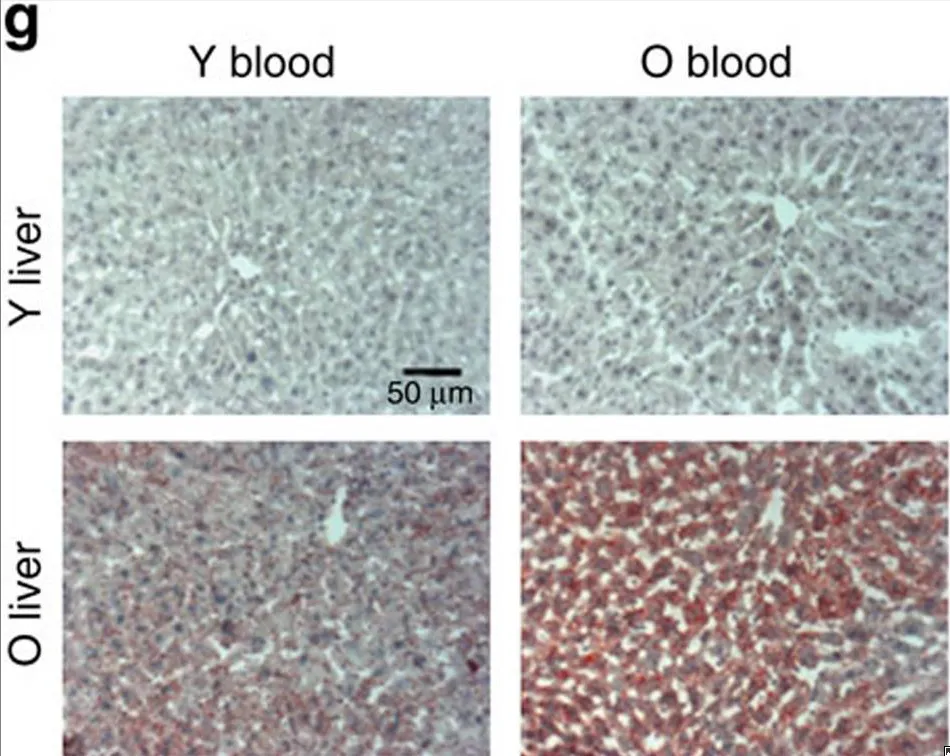
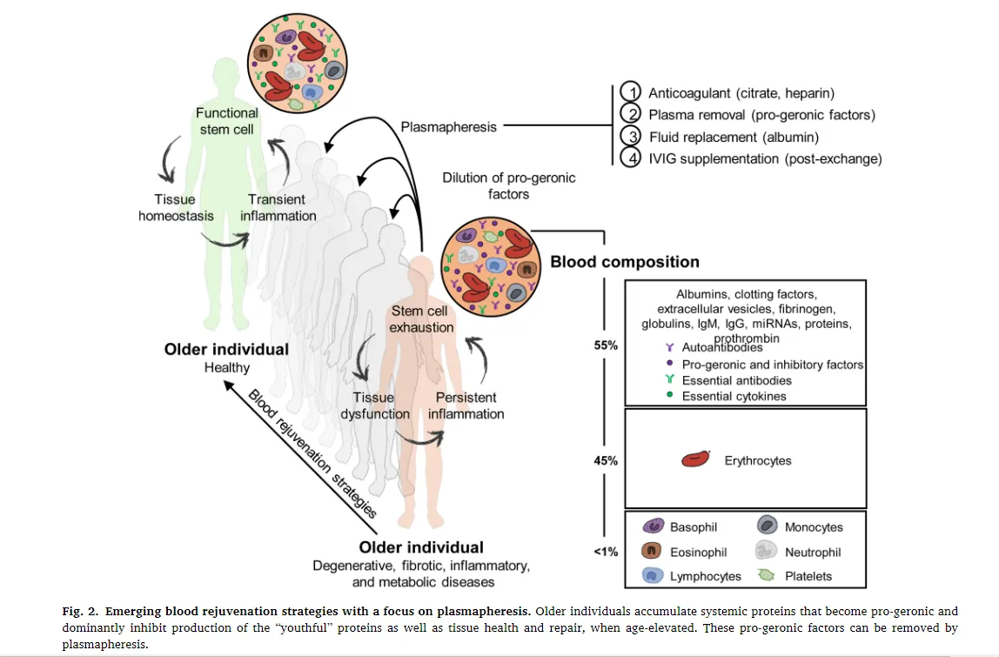
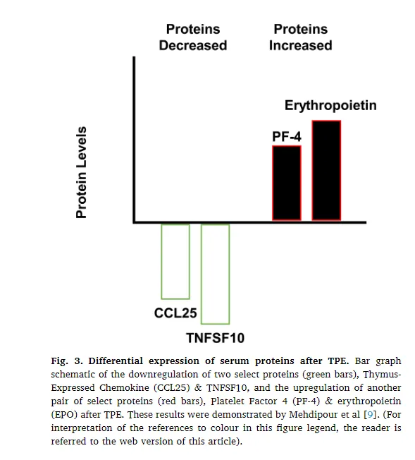

1. Why do we age?
When you are injured your body can heal itself. So why do people age? Why can't they continually repair themselves and remain eternally youthful? While it's generally agreed that aging is the effect of systemic degradation on the body's ability to repair itself, what causes this degradation is less clear. To answer this let's look at parabiosis.
A background on parabiosis
Parabiosis is a surgical procedure where two animals' circulatory systems are stitched together. Why would you want to do that? Well, if you attach a younger mouse to an older one (heterochronic parabiosis) the older mouse grows younger, while the younger mouse actually ages! Importantly, the cells of the older mice actually regenerate - they are able to repair themselves, something older cells typically can't do.
The above-mentioned experiment was conducted by the Conboys, a couple researching aging at Berkley, back in 2005. To quote from their paper:
"Our experiments suggest… … that the systemic environment of a young animal is one that promotes successful regeneration, whereas that of an older animal either fails to promote or actively inhibits successful tissue regeneration… …Our studies also demonstrate that the decline of tissue regenerative potential with age can be reversed through the modulation of systemic factors, suggesting that tissues specific stem and progenitor cells retain much of their intrinsic proliferative potential even when old, but that age-related changes in the systemic environment and niche in which progenitor cells reside preclude full activation of these cells for productive tissue regeneration."
nature.com/articles/nature03260
The fact that an older mouse's tissue can regenerate is important. It is a clear indication that the mouse's cells retain the ability to regenerate, given the correct environment. Furthermore, young mice, given a bad environment suddenly grow old and lose some of their ability to repair themselves. This means that it's something environmental (systemic milieu) that's causing aging to happen.
Isolating the cause
The problem with this experiment is that parabiosis is complex. There are many factors that could be responsible for influencing the systemic milieu other than just the blood (shared organs etc). In order to verify that it is the blood, and not something else causing the regeneration, we need to conduct a better experiment.
2. An improved experiment
The Conboys developed a new system. One that would allow them to exchange blood between two mice without having to stitch them together. This isn't as easy as it sounds.
"We developed a blood exchange system where animals are connected and disconnected at will, removing the influence of shared organs, adaptation to being joined and so on."
doi.org/10.1038/ncomms13363
Now it's possible to see what happens when we give older mice blood transfusions from young mice, and vice versa. Do the effects seen in the previous experiment still take place? Let's look at the effect on 3 different types of mouse cells when they received a heterochronous blood transfusion.
Muscle cells:
"These data extrapolate the findings obtained with heterochronic parabiosis, and establish that the beneficial effects of young blood for the regeneration of old muscle take place right away and without the contribution of young organ systems"
Old muscle cells regenerate when supplied with young blood.
Brain Cells:
"One exchange of heterochronic blood severely decreased hippocampal neurogenesis in young mice, and surprisingly, there was no significant positive effect in the old mice that had been exchanged with young blood. Of note, these were the same old animals that showed improvement in muscle regeneration… …Muscle injury after blood exchange might add to the magnitude of the negative effects of old blood on young neurogenesis, and even without muscle injury, young hippocampal neurogenesis quickly declines after one old blood exchange."
Old blood damages young brain cells, but young blood doesn't seem to improve old brain cells.
Liver cells:
"…interestingly, transfusion with young blood somewhat reduced old liver adiposity, (while there was no significant increase in young liver adiposity). These results demonstrate that heterochronic blood exchange and heterochronic parabiosis yield similar enhancement of old hepatogenesis and decline of young hepatogenesis…. …Additionally, the fibrotic regions and adiposity rapidly decline in old livers after the exposure to young blood. Such effects manifest after just a single procedure of blood exchange and in the absence of the influences from heterochronic organ systems."

To summarize:
- The effects of parabiosis hold even with only a single blood transfusion.
- Young blood appears to have a positive impact on old mice.
- Old blood appears to have a negative impact on young mice.
- Regeneration in old mice could be due to positive factors in the young blood or due to negative factors in the old blood being diluted.
3. It's not the blood
At this point, it's important not to get carried away. The media immediately focused on the vampirism aspect and startups touted transfusion treatments, generating hysterical headlines and an FDA-issued warning.
It's the old blood we should focus on
Maybe there's nothing special about young blood. Maybe there's something in old blood that's inhibiting cell regeneration. When you switch blood between two mice, what you are actually doing is removing the harmful blood from the old mouse and giving it to the young mouse. This would explain why the younger mouse ages! And it means that simply removing harmful factors from old blood could cause regeneration!
"It was not formally established that young blood is necessary for this multi-tissue rejuvenation. …we replaced half of the plasma in mice with saline containing 5% albumin (terming it a “neutral” age blood exchange, NBE) thus diluting the plasma factors and replenishing the albumin that would be diminished if only saline was used."
"Our data demonstrate that a single NBE suffices to meet or exceed the rejuvenative effects of enhancing muscle repair, reducing liver adiposity and fibrosis, and increasing hippocampal neurogenesis in old mice, all the key outcomes seen after blood heterochronicity."
doi.org/10.18632/aging.103418
They removed some of the mouse's plasma (a component of blood), and replaced it with an albumin solution and still got positive results! There's no need for young blood, all you need to do is remove negative factors from the old blood!
"Summarily, these results establish broad tissues rejuvenation by a single replacement of old blood plasma with physiologic fluid: muscle repair was improved, fibrosis was attenuated, and inhibition of myogenic proliferation was switched to enhancement; liver adiposity and fibrosis were reduced; and hippocampal neurogenesis was increased. This rejuvenation is similar to (liver) or is stronger than (muscle and brain) that seen after heterochronic parabiosis or blood exchange."
"These findings are most consistent with the conclusion that the age-altered systemic milieu inhibits the health and repair of multiple tissues in the old mice, and also exerts a dominant progeric effect on the young partners in parabiosis or blood exchange."
Dilution of old blood causes rejuvenation
So actually, just replacing the plasma from old blood with an albumin solution seems to provide all the benefits of young blood! It seems that plasma factors in the blood of old animals are somehow inhibiting cell regeneration – causing aging. Once these harmful factors are removed from the blood, the cells are able to regenerate, making them young again!
4. Treatments in humans
This is all good and well, but I'm no mouse. How can we benefit? Well, the good news is that a treatment called TPE already exists. TPE; therapeutic plasma exchange is similar to the NBE that was tried in mice. It's used to treat various conditions and is FDA approved.
Here's how it works. Blood is drawn, and the plasma fraction separated and removed. The blood cells are then resuspended in an albumin solution and returned to the patient. This allows us to achieve the plasma dilution necessary to remove the harmful factors from the blood. All that's being done is that the blood is being "cleaned" of the harmful factors in the plasma that have been shown to contribute to aging, no young blood is needed at all.

Moving forward
Currently, trials are underway to better understand the effects of TPE. One interesting insight we already have is that not only does TPE reduce the levels of certain factors in the blood but it also raises the levels of other proteins such as EPO (erythropoietin). This suggests that the factors removed from the blood have some sort of inhibitory effect and that once they're removed certain proteins are better expressed!

"Because repositioning TPE as a rejuvenative therapeutic is a relatively new concept, there are many unexplored questions regarding its potential and utility. Our recent 2020 studies demonstrated rejuvenation of three key tissues –muscle, liver and brain, as well as improved cognition and short memory in old mice – but other areas of health that decline with age are yet to be explored. Furthermore, it is unknown how long these rejuvenative effects persist. The health of the studied tissues is inter-estingly closer to the young than the old mammal (e.g. robustly reju-venated), but it is unknown if the rate of tissue health decay will be akin to a middle-aged mouse or if it will decline at a different rate. Perhaps, TPE will continue to stave off tissue decline for a longer period. Aging results in a near-endless list of systemic changes on tissue, cellular and molecular levels, and multiple methods of therapeutics will be required to address these alterations. More research is clearly needed to develop and explore the applications of rejuvenative plasmapheresis alone or in combination with other therapeutics"
doi.org/10.1016/j.transci.2021.103162
Conclusion
We will have to await the results of further trials to see exactly how much TPE helps. But the results seem pretty robust thus far. The real advantage of this method is that it doesn't require developing a new drug, it works by removing the harmful elements from the body. This is a major advantage in terms of getting treatments approved and ensuring their safety.
Let me know what you think, and tell me if I've missed something or made any mistakes. This is my attempt to summarize the research, but I certainly could've gotten something wrong.
← Back to all posts